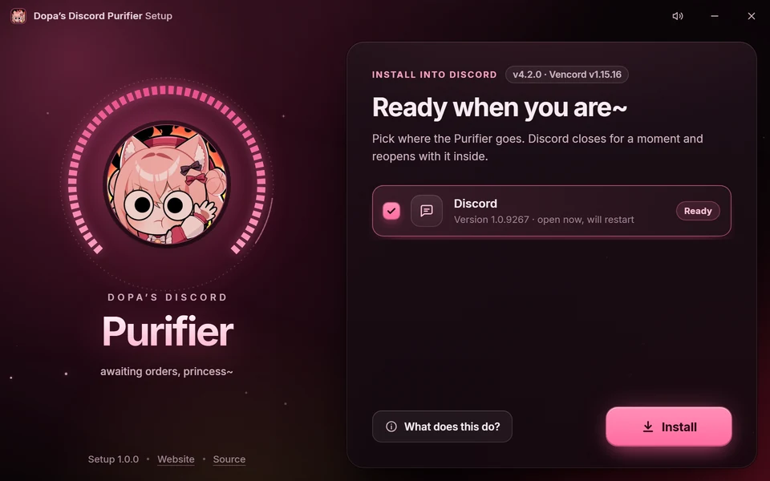
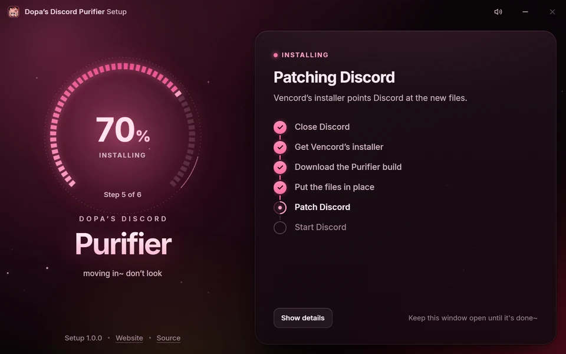
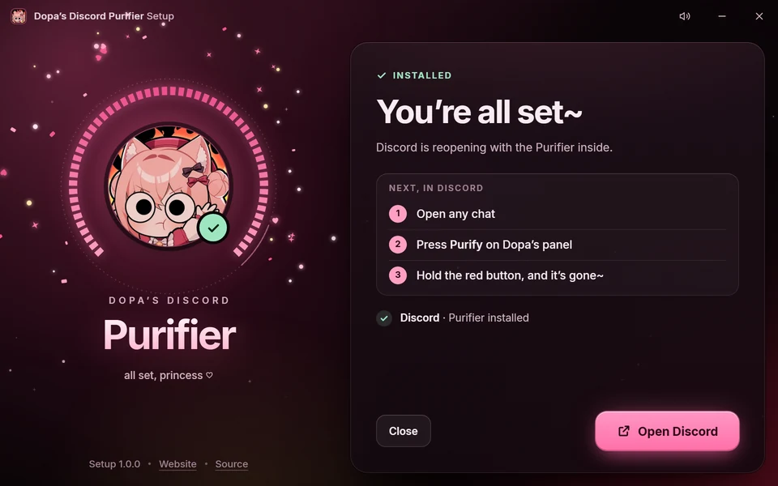

Dopa's Discord Purifier
Dopa's Discord PurifierWipe your Discord messages, gently.
Every message you ever sent in a DM, group or server — gone in a few clicks. Nothing else is touched.
- Only your messages
- Login stays in Discord
- Free & open source

Put it right in your Discord app
One download for Windows. It sets up Vencord, a popular Discord mod, with the Purifier built in — then Discord reopens wearing it~ ♡
Windows only for now~ On a Mac or Linux, use Discord in your browser instead: same account, same chats. The setup is up there ♡
- DownloadOne small file, DopasPurifierSetup.exe.
- Run itOpen it from your downloads. If Windows asks first, the blue box shows what to press ✨
- Discord reopens with the PurifierLook top-right for the panel, open any chat, then Purify.
Microsoft Defender SmartScreen prevented an unrecognised app from starting.
More info Don't runApp: DopasPurifierSetup.exe
Publisher: Unknown publisher
Run anywayDon't run
Ready when you are~ It finds your Discord by itself. 
One click, then hands off Discord closes for a moment. 
You're all set~ Discord reopens with the Purifier inside.
- What it installsVencord, a popular Discord mod, with Dopa's Purifier built in. It stays through Discord's own updates.
- Your settings stayAlready on Vencord? Your settings and plugins are kept just as they are.
- Easy to undoRun the same app again and press Uninstall — Discord goes back to plain.
Honest note: client mods like Vencord are against Discord's terms, so like any tool of this kind it carries a small risk. Use it at your own discretion.
Rather use Discord in your browser? Set it up there instead — or already on BetterDiscord?
Set it up in your browser
The Purifier lives inside Discord in your browser, carried by Tampermonkey, a free helper extension. Set it up once — updates arrive by themselves.
On your phone, princess? ♡ The Purifier lives in a computer's browser~
This link is already in your Discord chat — click it there on your computer ✨
Or right here: Firefox for Android can wear it, with Tampermonkey and Desktop site switched on.
-
Add Tampermonkey to Chrome
Free, made for exactly this. Click Add to Chrome on the page that opens.
-
Switch on “Allow User Scripts”
Your browser keeps userscripts off until you say yes — without this, nothing happens.
- Copy this, paste it into a new tab:
chrome://extensions - Press Details on Tampermonkey and turn on Allow User Scripts.
- Right-click the Tampermonkey icon in your toolbar (it may be under the puzzle-piece Extensions button) and choose Manage extension.
- Turn on Allow User Scripts.
- Don't see that switch? Open and turn on Developer mode (top right) instead.
No such switch? Turn on Developer mode, top right of that same page.
- Copy this, paste it into a new tab:
-
Install the Purifier
Tampermonkey opens a page showing the script — click Install there. Come back here afterwards and this page ticks itself off.
-
Open Discord in this browser
Already open? Reload it once. Look top-right for the panel, open any chat, then Purify, and hold the red button. That's it~
Cute on the outside, thorough on the inside
It only ever deletes messages you sent, at a pace Discord is happy with, and shows you everything as it goes.

Know before you purge
It counts your messages in a chat and says how long a purge takes, before anything goes.

Hold to purify
No accidental clicks: hold the button and watch it fill.

Many chats at once
Tick DMs and server channels, then purge them in one go.

Shield your people
Tap the shield on anyone's DM and it's never purged, until you say so.
No installer, or BetterDiscord
No installer: use Discord in your browser
Same account, same chats — just at discord.com/app. Set it up above, purge, and go back to the app whenever you like.
Open Discord in the browserAlready on BetterDiscord?
- Download the plugin (button below).
- In Discord: User Settings → Plugins → Open Plugins Folder, drop the file in.
- Switch DopasPurifier on. The panel appears top-right.
New versions ask first, right inside Discord — press Update ♡
Download pluginGood to know
Is it safe? Does it send my login anywhere?
You never paste a token, a password or any code. It installs like any browser extension and runs entirely inside your own Discord tab (or the Discord app, through Vencord or BetterDiscord), using the session you're already logged in with — your login and messages never leave Discord.
The userscript talks to Discord and nothing else; Tampermonkey itself fetches new versions of it from GitHub. The BetterDiscord plugin also asks GitHub once each time it starts whether there's a new version, and in the Discord app Vencord checks this project's GitHub releases for new builds. No servers of ours, no tracking~ ♡ The whole thing is public on GitHub, so anyone can check.
Windows says it “protected your PC” — is the installer OK?
That blue box is Microsoft Defender SmartScreen. It shows for new apps that Windows hasn't seen many people run yet — it doesn't mean anything was found. Press More info, then Run anyway.
Want to check first? Every release lists the installer's SHA-256 checksum, and all the code is public on GitHub.
Can it delete other people's messages?
No. Discord only lets you delete your own messages, and the purifier only ever asks for yours. DMs with anyone you shield are left alone, even mid-purge, and Bardo and Dopa are shielded from the start~ ♡ Shields cover one-to-one DMs, not group chats.
Can I undo a purge?
No — deleted means deleted. That's why it counts first and asks you to hold the button. Pause or Stop any time; nothing after that point is touched.
Does anyone get told?
Discord doesn't notify anyone when you delete a message — it just quietly disappears for everyone. A server's own logging bot may have kept a copy; that's outside anyone's reach but the server's.
Could my account get in trouble?
Honest answer: Discord's terms don't allow automating your account, and any tool like this carries a small risk. The purifier works at a human-ish pace (about 40 messages a minute), slows down whenever Discord asks, and never runs on its own — you start every purge. Use it at your own discretion.
The Discord app version runs inside Vencord, a client mod, and client mods are against Discord's terms too — the same small risk, the same honest answer.
How long does it take?
About 40 messages a minute, so 1,000 messages take around 25 minutes — a pace Discord is happy with, and slower whenever it asks for a break. A scan tells you the estimate up front; you can minimise the panel and keep chatting while it works. Keep the Discord tab open until it's done.
How do updates work?
Tampermonkey checks for new versions automatically. If you want it now: Tampermonkey icon → Utilities → Check for userscript updates, or press Install (or Reinstall) in step 3.
On BetterDiscord, the plugin checks each time Discord starts and asks before it updates.
In the Discord app, Vencord fetches new builds from this project's releases by itself and tells you to restart Discord. It also puts itself back after Discord updates.
How do I remove it?
Tampermonkey icon → Dashboard, then the bin next to the Purifier. Or remove Tampermonkey itself. On BetterDiscord, delete the plugin file. In the Discord app, run DopasPurifierSetup.exe again and press Uninstall.
Nothing shows up in Discord — help!
Nine times out of ten it's the Allow User Scripts step: on Chrome, Edge, Opera and Brave the Allow User Scripts switch (or Developer mode) must be on. Then make sure Tampermonkey is enabled, the script is switched on in its dashboard, and reload Discord. Still stuck? Open an issue.